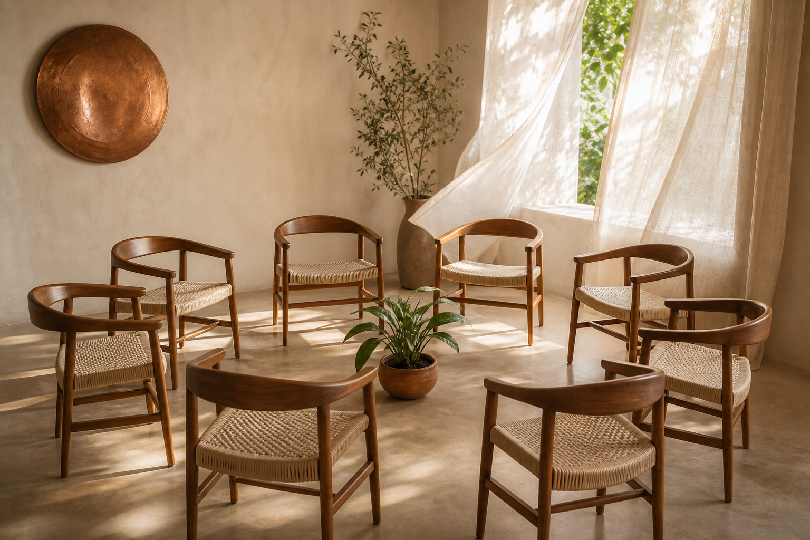
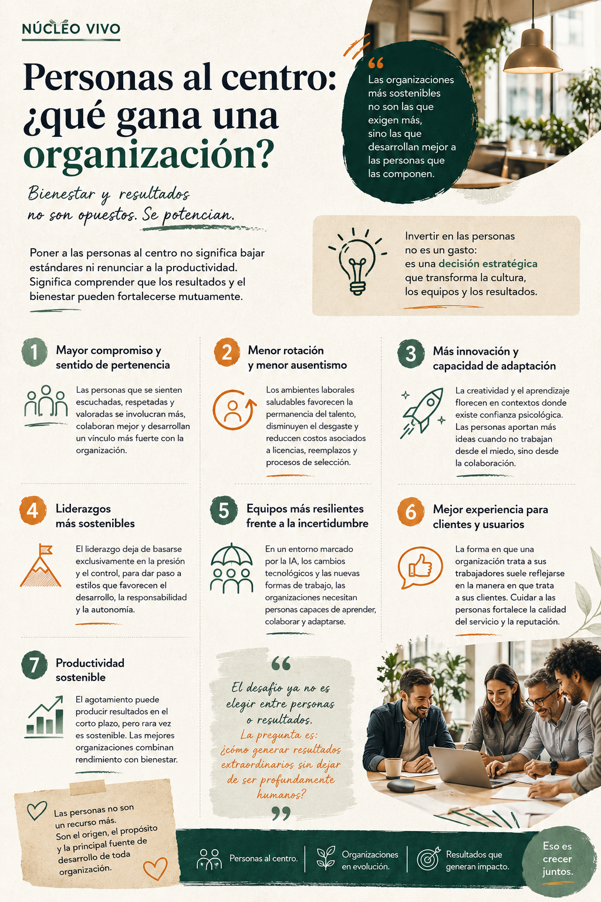
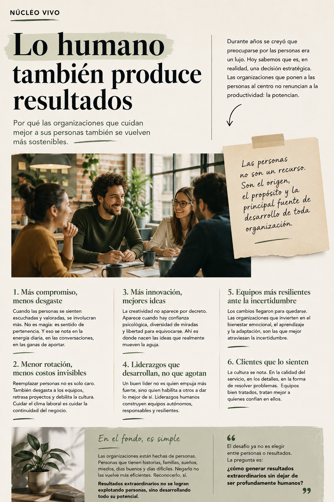
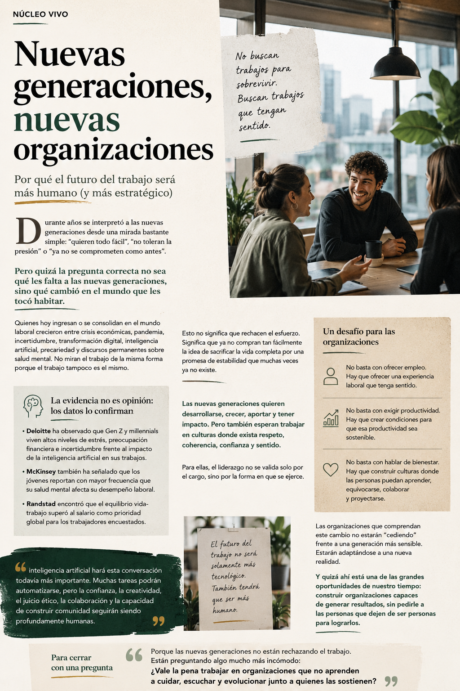

Personas al centro: ¿qué gana una organización?
Bienestar, compromiso y resultados no son opuestos. Se potencian.
Leer artículoNúcleo Vivo
Consultoría humana y organizacional
Acompañamos a personas, equipos y organizaciones que buscan crecer, aprender y adaptarse a los desafíos de nuestro tiempo sin perder de vista lo humano.
Cultura · Liderazgo · Bienestar · Transformación

Creemos que el desarrollo organizacional y el desarrollo humano no son caminos separados.
Trabajamos acompañando personas, equipos y organizaciones que buscan crecer, aprender y adaptarse a los desafíos de nuestro tiempo.
Núcleo Vivo nace para transformar diagnósticos, conversaciones y aprendizajes en acciones concretas. Integramos mirada humana, estrategia organizacional y herramientas aplicadas para fortalecer culturas más conscientes, colaborativas y sostenibles.
Una idea simple orienta nuestro trabajo
Lo humano no es un complemento de la estrategia. Es su núcleo.Núcleo Vivo no está terminado. Está vivo.
Distintas formas de acompañar un mismo desafío: construir culturas, aprendizajes y vínculos capaces de evolucionar con sentido.
Cultura organizacional, liderazgo, bienestar y transformación.
Conocer la líneaEducación, bienestar y comunidad. Una iniciativa de Núcleo Vivo.
Conocer SembrarTeatro aplicado para el desarrollo humano. Una iniciativa de Núcleo Vivo.
Conocer Escena VivaIdeas sobre personas, trabajo y sociedad.
Explorar CuadernosNo llegamos con respuestas cerradas. Leemos el contexto, diseñamos junto a quienes lo habitan y acompañamos la puesta en práctica.
Escuchar, diagnosticar y reconocer las dinámicas que ya están vivas.
Construir respuestas pertinentes, aplicables y conectadas con el propósito.
Sostener el aprendizaje hasta convertirlo en prácticas y capacidades.
Cuadernos de Núcleo Vivo
Un espacio para mirar con calma lo que está cambiando: cómo trabajamos, cómo lideramos, cómo aprendemos y cómo construimos bienestar en tiempos donde todo parece moverse demasiado rápido.
Porque entender mejor lo que nos pasa también es una forma de transformar lo que hacemos.

Bienestar, compromiso y resultados no son opuestos. Se potencian.
Leer artículo
Por qué las organizaciones que cuidan mejor a sus personas también se vuelven más sostenibles.
Leer artículo
Por qué el futuro del trabajo será más humano y más estratégico.
Leer artículoUn espacio para conversar con más profundidad sobre personas, trabajo, cultura, bienestar y los cambios que están dando forma a nuestra vida en común.
Escuchar en SpotifySi formas parte de una empresa, colegio, fundación, institución o equipo que quiere fortalecer su cultura, liderazgo o bienestar, podemos comenzar por una conversación.